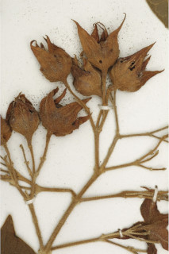
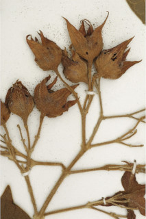

Large shrubs or small trees ca. 4 m tall.
ದೊಡ್ಡ ಗಾತ್ರದ ಪೊದೆಗಳು ಅಥವಾ ಅಂದಾಜು 4 ಮೀ. ಎತ್ತರದ ಸಣ್ಣ ಮರಗಳು.
Large shrubs or small trees ca. 4 m tall.
பெரிய குத்துச்செடி அல்லது சிறிய மரம், 4 மீ. உயரம் வரை வளரக்கூடியது.
Branchlets quadrangular, fulvous tomentose.
ಕಿರುಕೊಂಬೆಗಳು 4-ಕೋನಯುಕ್ತವಾಗಿದ್ದು ನಸುಗೆಂಪಿನಿಂದ ಕೂಡಿದ ಹಳದಿ ಬಣ್ಣದ ದಟ್ಟ ಮೃದುತುಪ್ಪಳದಿಂದ ಕೂಡಿರುತ್ತವೆ.
Branchlets quadrangular, fulvous tomentose.
சிறிய நுனிக்கிளைகள் நான்கு கோணங்களுடையது, உரோமங்களுடையது.
Leaves simple, opposite, decussate; petiole 2.5-8 cm long , terete, fulvous tomentose; lamina 7-17 (-23) x 7.5- 15 cm, broad elliptic-ovate or suborbicular, apex acuminate, base cordate, margin entire or dentate, subcoriaceous, fulvous tomentose; midrib raised with tomentose above; 5-7-nerved at base; secondary_nerves ca. 2-3 pairs; tertiary_nerves distantly and horizontally percurrent.
ಎಲೆಗಳು ಸರಳವಾಗಿದ್ದು ಅಭಿಮುಖ,ಕತ್ತರಿಯಾಕಾರದ ಜೋಡನಾ ವ್ಯವಸ್ಥೆಯಲ್ಲಿರುತ್ತವೆ; ತೊಟ್ಟುಗಳು 2.5 –8 ಸೆಂ.ಮೀ. ಉದ್ದವಿದ್ದು, ದುಂಡಾಗಿರುತ್ತವೆ, ನಸುಗೆಂಪಿನಿಂದ ಕೂಡಿದ ಹಳದಿ ಬಣ್ಣದ ದಟ್ಟ ಮೃದುತುಪ್ಪಳದಿಂದ ಕೂಡಿರುತ್ತವೆ;ಪತ್ರಗಳು 7- 17(-23) X 7.5 –15 ಸೆಂ.ಮೀ. ಗಾತ್ರ,ವಿಶಾಲ ಅಂಡವೃತ್ತ- ಅಂಡಾಕಾರ ಅಥವಾ ಉಪಅಂಡಾಕಾರದ ಆಕಾರ ಹೊಂದಿದ್ದು, ಕ್ರಮೇಣ ಚೂಪಾಗುವ ತುದಿ, ಹೃದಯಾಕಾರದ ಬುಡ, ನಯವಾದ ಅಥವಾ ಅಥವಾ ದಂತಿತವಾದ ಅಂಚು ,ಉಪ ತೊಗಲನ್ನೋಲುವ ಮೇಲ್ಮೈ ಹೊಂದಿದ್ದು ನಸುಗೆಂಪಿನಿಂದ ಕೂಡಿದ ಹಳದಿ ಬಣ್ಣದ ದಟ್ಟ ಮೃದುತುಪ್ಪಳದಿಂದ ಕೂಡಿರುತ್ತವೆ; ಮಧ್ಯನಾಳ ಮೇಲ್ಭಾಗದಲ್ಲಿ ಮೇಲೆದ್ದಿದ್ದು ನಸುಗೆಂಪಿನಿಂದ ದಟ್ಟ ಮೃದುತುಪ್ಪಳದಿಂದ ಕೂಡಿರುತ್ತವೆ ; ಪತ್ರಗಳ ಬುಡದಲ್ಲಿ 5 – 7 ನಾಳಗಳಿರುತ್ತವೆ; ಎರಡನೇ ದರ್ಜೆಯ ಅಂದಾಜು 2 ರಿಂದ 3 ಜೋಡಿಗಳಿರುತ್ತವೆ; ಮೂರನೇ ದರ್ಜೆಯ ನಾಳಗಳು ಅಂತರ ಹೊಂದಿದ್ದು,ಲಂಬ ರೇಖೆಗೆ ಸಮಕೋನದಲ್ಲಿದ್ದು ಎಲೆಯ ದಿಂಡಿಗೆ ಅಡ್ಡವಾಗಿ ಕೂಡುವ ಮಾದರಿಯಲ್ಲಿರುತ್ತವೆ.
Leaves simple, opposite, decussate; petiole 2.5-8 cm long , terete, fulvous tomentose; lamina 7-17 (-23) x 7.5- 15 cm, broad elliptic-ovate or suborbicular, apex acuminate, base cordate, margin entire or dentate, subcoriaceous, fulvous tomentose; midrib raised with tomentose above; 5-7-nerved at base; secondary_nerves ca. 2-3 pairs; tertiary_nerves distantly and horizontally percurrent.
இலைகள் தனித்தவை, எதிரடுக்கமானவை, குறுக்குமறுக்கானவை; இலைக்காம்பு 2.5-8 செ.மீ. நீளமானது, குறுக்குவெட்டுத் தோற்றத்தில் வளையமானது, உரோமங்களுடையது; இலை அலகு 7-17 (-23) X 7.5-15 செ.மீ., அகன்ற நீள்வட்டம்-முட்டை வடிவானது அல்லது ஆர்பிக்குலார், அலகின் நுனி அதிக்கூரியது, அலகின் தளம் இதய வடிவானது, அலகின் விளிம்பு முழுமையானது அல்லது பற்களுடையது, சப்கோரியேசியஸ், உரோமங்களுடையது; மையநரம்பு மேற்பரப்பில் அலகின் பரப்பைவிட உயர்ந்து இருக்கும் மற்றும் உரோமங்களுடையது; தளத்திலே 5-7 நரம்புகளை உடையது; இரண்டாம் நிலை நரம்புகள் 2-3 ஜோடிகள்; மூன்றாம் நிலை நரம்புகள் விளிம்பு நோக்கிய இணையான அகன்ற பெர்க்கரண்ட்..
Inflorescence terminal panicle, up to 18 cm long, fulvous pubescent; flowers zygomorphic, white.
ಪುಷ್ಪಮಂಜರಿ ತುದಿಯಲ್ಲಿನ ಪುನರಾವೃತ್ತಿಯಾಗಿ ಕವಲೊಡೆಯುವ ಮಾದರಿಯವುಗಳಾಗಿದ್ದು 18 ಸೆಂ.ಮೀವರೆಗಿನ ಉದ್ದವನ್ನು ಹೊಂದಿರುತ್ತವೆ, ನಸುಗೆಂಪಿನಿಂದ ಕೂಡಿದ ಹಳದಿ ಬಣ್ಣದ ದಟ್ಟ ಮೃದುತುಪ್ಪಳದಿಂದ ಕೂಡಿರುತ್ತವೆ ; ಹೂಗಳು ಉಭಯ ಪಾರ್ಶ್ವ ಅಸಮಾಂಗತೆಯುಳ್ಳ ಮಾದರಿಯಲ್ಲಿದ್ದು ಬಿಳಿಬಣ್ಣದವುಗಳಾಗಿರುತ್ತವೆ.
Inflorescence terminal panicle, up to 18 cm long, fulvous pubescent; flowers zygomorphic, white.
மஞ்சரி தண்டின் நுனியில் காணப்படும், பேனிக்கிள் வகை மஞ்சரி, 18 செ.மீ. நீளமானது, உரோமங்களுடையது; மலர்கள் ஒழுங்கற்றவை (சைகோமார்பிக்), வெள்ளை நிறமானது.
Drupe, black, nearly globose seated on enlarged pinkish accrescent calyx.
ಡ್ರೂಪ್ಗಳು ಕಪ್ಪಾಗಿರುತ್ತವೆ ಹಾಗೂ ಹೆಚ್ಚೂ ಕಡಿಮೆ ಗೋಳಾಕಾರದಲ್ಲಿದ್ದು,ವಿಕಸಿತಗೊಂಡ,ನಸುಗೆಂಪು ಬಣ್ಣದ ಪುಷ್ಪ ಪಾತ್ರೆಯ ಮೇಲೆ ಆಸೀನವಾಗಿರುತ್ತವೆ.
Drupe, black, nearly globose seated on enlarged pinkish accrescent calyx.
உள்ளோட்டுத்தசைகனி (ட்ரூப்), கருப்பு நிறமானது, கிட்டதட்ட கோள வடிவமானது, பெரிய நிரந்தரமான பிங்க் நிறமான புல்லி இதழ்கள் உடையது.

 
